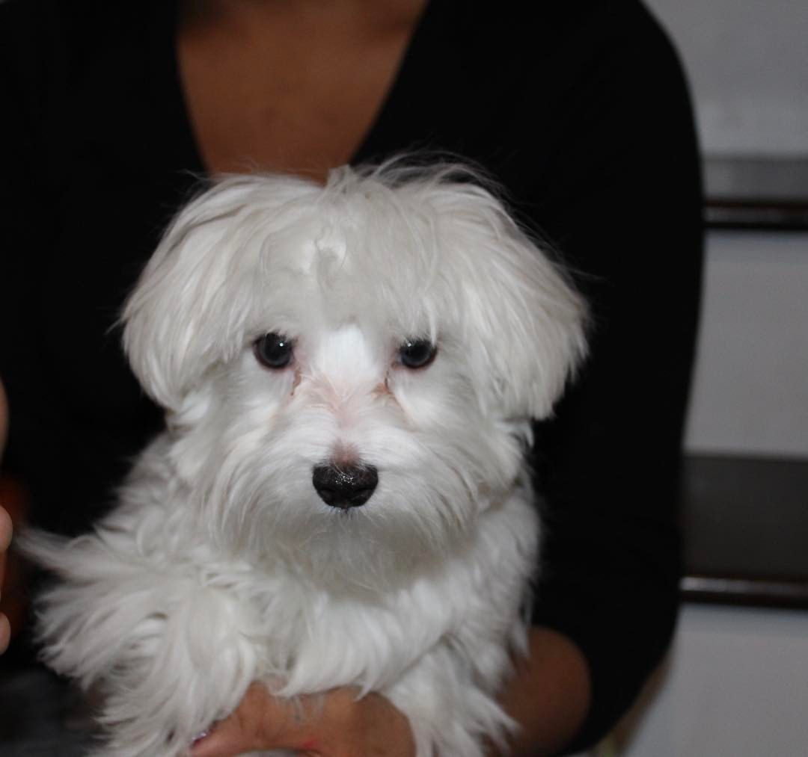
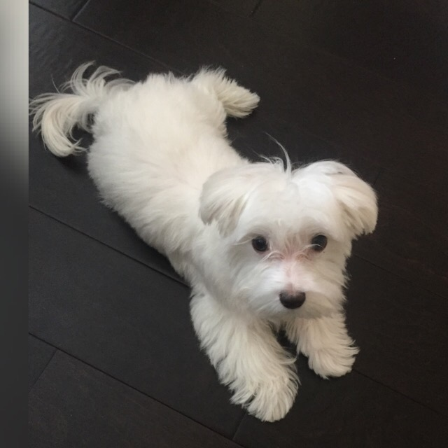
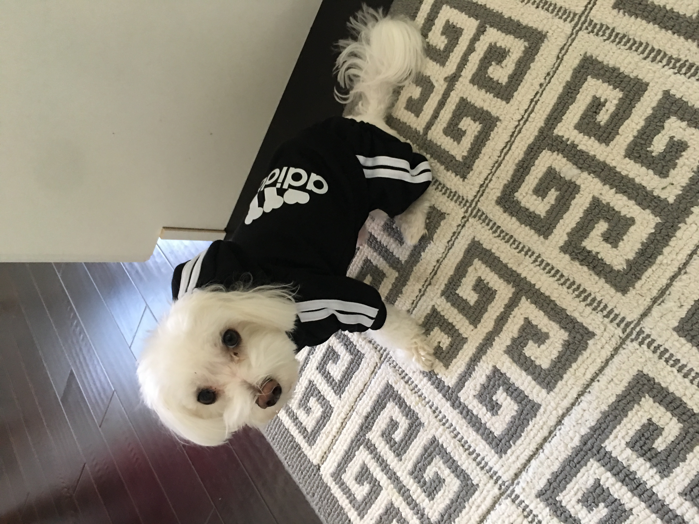
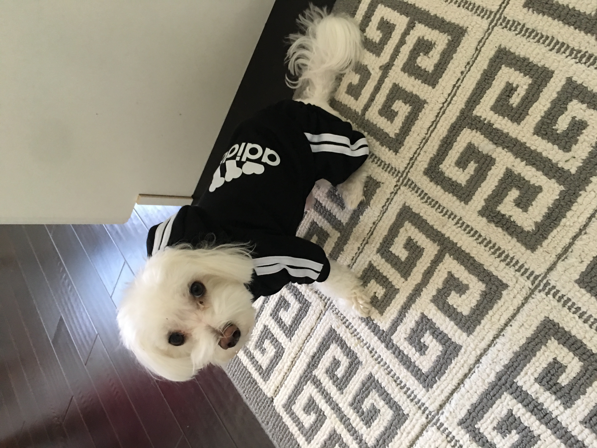
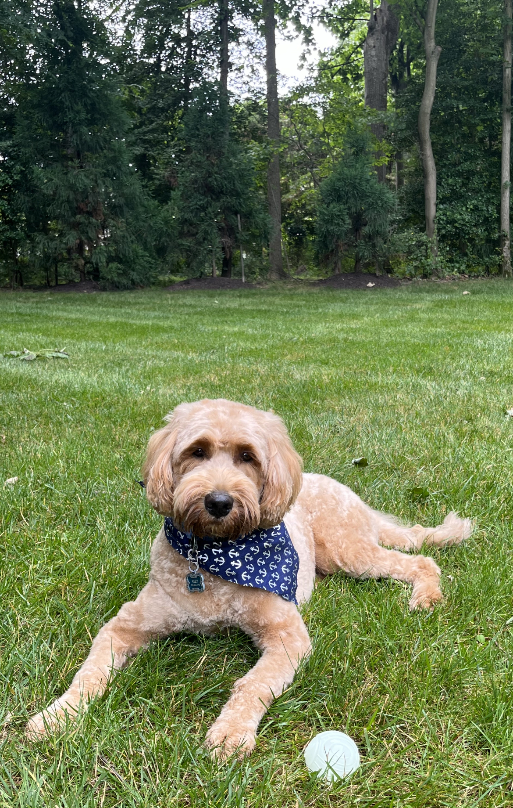

Milo
Milo, a bashful yet warm-hearted dog, holds a deep appreciation for social interactions, whether they involve humans or fellow pets. Having spent his entire life with the same loving family, Milo's consistent displays of loyalty reflect his strong sense of familiarity and connection. He's known for his charming quirks, such as his penchant for taking a few steps backward instead of a simple turn when changing direction.
Despite his shyness, Milo's keen senses come to the forefront. At the sound of a passing car, his bark, though more bark than bite, resonates beyond the walls of the house. Interestingly, Milo has never quite grasped the concept of navigating stairs, yet he remains remarkably perceptive about his surroundings. It's this unique blend of traits that makes Milo an endearing presence, leaving a lasting impression on those fortunate enough to share in his companionship.
Photo Gallery
 


Likes
- Bacon
- Socks
- Attention
Cheeto (Chicken)

Cheeto is a cat who likes to eat a lot and play a lot. He has an obsession with his grandpa (human) and tries to get outside every single day. If he isn’t causing problems, he is usually hiding in a seven foot tall cat tree and sleeping.
Another name for Cheeto is Chicken, because sometimes he sits very scrunched up and ends up looking like a rotisserie chicken. He was nicknamed this by one of his friends, and now he understands it as his own name. He is about six years old and still acts like a younger cat, despite being middle-aged.
Photo Gallery


Likes
- Treats
- Exploring
- My Dad
Chief

Chief is a 9 year old pomeranian who loves to sleep as much as he can. He naps anywhere, ranging from someone's bed to the grass outside. He enjoys walking outside, but keep watch of him, otherwise he will try to consume geese poop.
He does not like any toys anymore as when he was younger, he watched a bigger toy shred his favorite one to pieces. He used to know how to roll over, but now replaced that memory with a spin as it is much easier.
Photo Gallery


Likes
- Sleeping
- Deli Chicken
- Pets behind the ear
Riley
Riley is a 2yr old goldendoodle. He is very active and loves attention. Riley can be pretty mischievous; as such, his favorite activity is begging for (or stealing) food, however getting cuddled on a cool floor comes as a close second. In addition, Riley loves to walk in his local park or hang out with his best friend Cosmo.
Riley would NOT survive in the wild. He is very stubborn, jealous, and pampered. He’s currently in his “terrible twos,” and must get everything his way. That said, Riley is loved by his family as a perfect, funny, and loyal dog.
Photo Gallery


Likes
- Sneaking onto the couch
- Being grumpy after naps
- Peering onto kitchen countertops
Sofie

Sofie is a 15-year-old Beagle mix. Her favorite spot in the house is the living room couch. She loves to go outside, sometimes too much, leaving us to open the door for her constantly. Sofie loves freshly cut grass, she rolls around in it for hours after it gets cut.
Sofie is very old, she joined our family when I was still in a car seat. Sofie loves the weekends because she gets her favorite treat, a fried egg. Sofie loves long walks around the lake or on the trail, where she can be let free to run to he hearts content.
Photo Gallery


Likes
- Fried Eggs
- Peanut Butter
- Bacon Strips